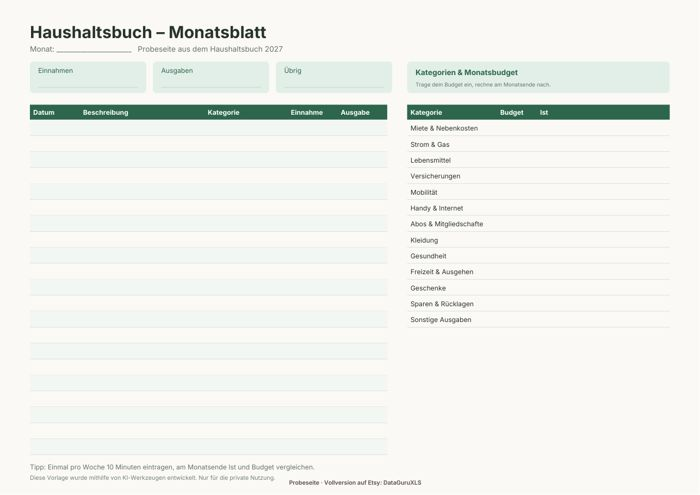

Haushaltsbuch Vorlage kostenlos
Wer weiß, wohin das Geld fließt, kann gezielt sparen. Mit dem kostenlosen Monatsblatt zum Ausdrucken startest du sofort, noch bevor du dich für eine Tabelle entscheidest.


Kostenlose Probeseite herunterladen
Monatsblatt mit Einnahmen, Ausgaben und Kategorien-Budget (1 Seite, A4 quer).
PDF herunterladen (kostenlos)Haushaltsbuch führen: So fängst du an
Ein Haushaltsbuch ist keine Kontrolle, sondern ein Überblick. Schon nach einem Monat siehst du, welche Ausgaben dich überraschen, und kannst entscheiden, wo du bewusst weniger ausgibst. Die Probeseite ist so aufgebaut, dass du sie ohne Vorkenntnisse ausfüllen kannst.
In fünf Schritten zum ersten Monat
- Trage oben alle festen Einnahmen ein: Gehalt, Kindergeld, Nebenverdienst.
- Notiere die Fixkosten wie Miete, Strom, Versicherungen und Abos in der Tabelle.
- Lege rechts für jede Kategorie ein Monatsbudget fest. Orientierung bietet die 50-30-20-Regel: 50 % Fixes, 30 % Wünsche, 20 % Sparen.
- Halte jede Ausgabe mit Datum, Beschreibung und Kategorie fest, am besten einmal pro Woche.
- Rechne am Monatsende nach und vergleiche Ist und Budget.
Tipps, damit du dranbleibst
- Plane einen festen Termin ein, zum Beispiel Sonntagabend 10 Minuten.
- Sammle Kassenbons oder Kontoauszüge und trage sie gesammelt ein.
- Nutze nicht zu viele Kategorien. Zehn bis fünfzehn reichen für den Anfang.
- Lege einen Puffer für Unvorhergesehenes an, damit ein Ausreißer nicht gleich frustriert.
- Belohne dich, wenn du dein Sparziel erreichst.
Auf Papier ist das Haushaltsbuch ein guter Einstieg. Wer lieber am Rechner oder Handy arbeitet, spart mit der fertigen Tabelle die Rechenarbeit und sieht auf einen Blick, wie sich Einnahmen und Ausgaben über das Jahr entwickeln.
Häufige Fragen
Papier oder Tabelle: was ist besser?
Papier ist anschaulich und braucht keine Technik. Eine Tabelle rechnet Summen, Budgets und Sparquote von allein und lässt sich unterwegs am Handy ausfüllen. Beginne mit dem, was du wirklich regelmäßig nutzt.
Wie viele Kategorien brauche ich?
Zehn bis fünfzehn Kategorien genügen: Wohnen, Strom, Lebensmittel, Mobilität, Versicherungen, Freizeit, Kleidung, Gesundheit, Sparen und Sonstiges. Details kannst du später ergänzen.
Darf ich die Probeseite weitergeben?
Die Datei ist für deinen privaten Gebrauch gedacht. Du kannst sie beliebig oft ausdrucken, aber bitte nicht weiterverkaufen oder an anderer Stelle zum Download anbieten.
Vollversion auf Etsy
Das Haushaltsbuch 2027 ist eine Tabelle für Excel und Google Sheets mit zwölf Monatsblättern, Jahresübersicht, Diagrammen und Kategorien-Budgets, die sich automatisch berechnen.
Haushaltsbuch 2027 auf Etsy ansehen